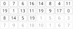

W osobnym oknie pojawiła się tablica liczb.
Twoja funkcja „idxMaxElement” powinna wyszukiwać element maksymalny w tej tablicy.
Oczywiście w tym celu w swoim programie powinieneś
skorzystać z funkcji specjalnej „porownaj”, która jest omówiona poniżej.
Funkcja „porownaj”, jak sama nazwa wskazuje służy do porównywania
dwóch liczb, jako parametr przyjmuje indeksy dwóch liczb,
a jako wynik zwraca liczbę -1, 0 lub 1. Funkcja zwraca:
- 0 jeśli liczby na podanych indeksach są równe
- -1 jeśli liczba na indeksie idx1 jest mniejsza od tej na indeksie idx2
- 1 jeśli liczba na indeksie idx1 jest większa od tej na indeksie idx2
Oczywiście jeśli choć jeden z podanych indeksów będzie ujemny albo wykroczy poza rozmiar
tablicy, to program zostanie zatrzymany i zostanie wyświetlony błąd wykonania programu.

Dla przykładu poniżej zaprezentowane jest kilka wywołań funkcji "porownaj",
przyjmijmy, że stan tablicy wygląda tak jak na po lewej stronie:
porownaj(1, 11) – wywołanie funkcji zwróci 0porownaj(5, 7) – wywołanie funkcji zwróci 1porownaj(1, 14) – wywołanie funkcji zwróci -1porownaj(14, 1) – wywołanie funkcji zwróci 1porownaj(3, -2) – wywołanie funkcji zakończy się błędemporownaj(16, 2) – wywołanie funkcji zakończy się błędem